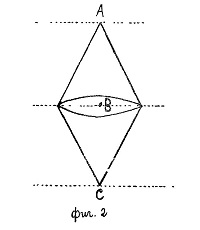
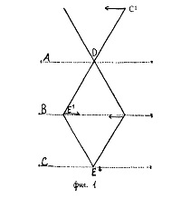

Беседа 1590 от 3877 · Беинса Дуно
Движение на силите / Посока на движението на световете. Развитие на линиите
Само светлият път на Мъдростта води към Истината.
В Истината е скрит животът.
Тема за следния път: „Основните принципи на съвременната математика“.
Какво се разбира под думата „зависимост“? Може ли двама души да се намират в известна зависимост и при какви условия съществува тази зависимост? Казват, че човек зависи от своя ум, от своето сърце и от своята воля. По какво познаваме, че даден човек зависи от ума, от сърцето или от волята си? – Как можете да изразите ума, сърцето и волята на човека геометрически? – С помощта на триъгълник, за основа на който приемаме волята.

Като знаете това, вие можете да си представите човешкия нос в четири измерения последователно. Запример, като права линия – в първото измерение; като плоскост – във второто измерение; като тяло – в третото измерение, и като тяло, което е подложено на постоянно растене, носът представя величина от четвъртото измерение. Колкото повече сили са работили върху човешкия нос, толкова повече измерения обхваща той. За да разберете коя линия на носа отговаря на четвъртото измерение, трябва да наблюдавате нервната система на човека под силно увеличение. Така ще видите как работи природата.

Като ученици, вие трябва да прониквате в дълбочината на нещата, за да имате по-големи постижения. Мнозина изучават геометрията, но малцина проникват в дълбочината на формите. Старите египтяни изучаваха геометрията, но спряха вниманието си върху линиите, плоскостите и телата, без да проникнат в дълбочината на телата. Едва индусите започнаха да проникват в дълбочината на телата, но и те не са постигнали много в тази област. И на индусите липсва още дълбочина в схващанията. Има области, дето те са силни, но не навсякъде. Като дойдат до философията на нещата, те се натъкват на големи празнини. Запример, някои индуси твърдят, че никакво движение в света не съществува. Всъщност не е така. Всички тела се движат, но с такава бързина, че движението им не се забелязва. Това не значи, че движение не съществува. Ако телата, както и частиците им, не се движат, светът би изчезнал, т.е. би се превърнал на нула.
Какво означават нулата и единицата? Нулата подразбира процес, при който нещата се намаляват. Единицата подразбира процес, при който нещата се увеличават. При нулата човек се запознава със закона на намаляването, на израждане на нещата. При единицата той се запознава със закона на растенето. При нулата човек губи, а при единицата печели. Болният губи, а здравият печели. – Защо боледува човек? – Защото се е натоварил много. Когато природата види, че някой човек се е натоварил много, тя му изпраща някаква болест, да отнеме част от материята му. Като отслабне, човек е доволен и намира, че е станал по-здрав от по-рано. Какво трябва да прави болният в болницата? – Да проповядва на хората, да ги обърне към Бога. Здравият лесно проповядва, но болният – мъчно. За да проповядва, преди всичко болният трябва да знае причината на заболяването си и да е готов да се изповяда. Всяка болест се дължи на някаква духовна причина. Неправилните отношения между близките хора – майка и деца, братя и сестри, мъж и жена – причиняват различни болести. Щом се изправят отношенията, болестта изчезва.
Болестите имат различен произход: физически, сърдечен и умствен. Когато студент или ученик пропадне на изпитите си, той пада духом и се намира в положението на болен. – Защо е пропаднал? – Много причини има за пропадането на ученика. Той може да не е учил достатъчно, но може да е учил и да пропадне; може да е неспособен, но може да е способен и пак да пропадне. Човек може да вади вода от кладенеца с тънко въже, без да се скъса въжето; въжето може да е дебело и пак да се скъса. Въжето представя разумността на човека. Значи ученикът може да е способен, но да не е разумен. Тогава, ако разумността отсъства, ученикът може да пропадне. Обаче случва се, че способен ученик пропада на изпитите си. – Защо? – Времето, както и действащите сили в природата, са указали влияние върху професора или върху ученика, и последният пропада. Някой ученик е много самонадеян и казва, че никой учител не може да го скъса. Той се самозаблуждава. Силното всякога може да спре движението на слабото. Професорът е силният, а ученикът – слабият. Следователно професорът всякога може да скъса студента или ученика.
Като ученици, вие трябва да изучавате средата и условията, при които живеете. Без това знание не можете да се хармонизирате. В този смисъл професорът е среда, с която студентът трябва да се хармонизира. Не може ли да се хармонизира, колкото и да е учил, ще стане нещо неочаквано и той ще пропадне на изпита. – Какво може да стане? – Или паметта му ще изневери, или съзнанието му ще потъмнее. Ученикът трябва да бъде разумен. Ако един камък се търкаля от планината, трябва ли да вървите срещу него? Вие ще се отбиете от пътя си, за да не падне камъкът върху вас. В дадения случай професорът е камъкът, който слиза отвисоко, а студентът е пътникът, който се качва на планината. За да не падне камъкът върху него и го удари, той трябва да бъде разумен, да се отбие от пътя си. Ако студентът или ученикът не прояви своята разумност, професорът ще го смачка. – Кой ще носи отговорността за това злополучие? – Студентът. Той трябваше да бъде разумен, да отстъпи на професора си. Когато професорът мине по своя път, студентът ще продължи движението си нагоре.
Когато изучавате природата, вие се натъквате на два вида процеси: механически и съзнателни. Те се различават по мястото на разумността. В механическите процеси разумността е отвън, а в съзнателните – вътре. Следователно, ако се натъкнете на един механически процес, не се борете с него, нито го коригирайте. Запример, гневът е механически процес. Колкото и да се борите с него, няма да го победите. Ще кажете, че искате да намерите причината на гнева, да се освободите от него. Каквито усилия да правите, не можете да намерите причината на гнева. Тя не е нито вън от вас, нито вътре във вас. Причината на гнева се крие в космоса.
Гневът е космическа сила, срещу която човек не може да се бори. Той не се поддава на нашата воля. Обектът на гнева е вън от човека. Следователно човек трябва да има знания, да гледа на предмета така, че да не се дразни от него. Наистина, докато гледа на нещата широко, човек никога няма да се гневи. Когато знае нещата, той не се гневи, не се и смущава. Запример, дойде някой при вас и ви казва, че апаш влязъл в дома ви. Вие оставате тих и спокоен. – Защо? – Знаете, че къщата ви е празна, апашът няма какво да вземе. Ако пък има нещо за крадене, ще знаете че сте направили някакво опущение, заради което ще понесете последствията си. За да не се гневи, човек трябва да гледа философски на живота. Срещате един ваш приятел, който бърза някъде, но вие го спирате. Той веднага кипва. – Защо се гневи? – Гладен е, отива на фурната да си купи хляб, страхува се, че хлябът ще се свърши. Напразно се гневи. Вие изваждате от торбата си един топъл хляб и му го предлагате. Щом вземе хляба, състоянието му се изменя. Това, което става с приятеля ви, става с всички хора. Всички бързат, час по-скоро да стигнат до фурната, да си купят хляб. Ако се осмелите да спрете някого на пътя му, той непременно ще се разгневи. Обаче дадете ли му топъл, хубав хляб, той го взима, благодари за него и неразположението му изчезва.
За да се справяте с енергиите, които рушат, вие трябва да се ползвате от всичко, което учите. Много неща учи човек на земята, но повечето от тях забравя. В края на краищата той ще остане с малък капитал в себе си, и то с този, който е приложил при самовъзпитанието си. Щом е така, работете съзнателно върху себе си и прилагайте всичко, което сте придобили. В много полета се движи човек, но от тях три са най-важни: физическото, сърдечното и умственото. Каквото придобие и приложи в тия полета, това ще занесе със себе си. Какво се разбира под думата „поле“? Полето е област, в която живеят и работят хиляди същества едновременно. Съзнателно или несъзнателно, те се намират в известно отношение помежду си. Запример, всички хора, които работят на физическия свят, са свързани помежду си. Също така са свързани и тия, които живеят в сърдечния и в умствения свят. Колкото по-съзнателна е връзката между хората, толкова по-големи придобивки имат. Някой казва, че живее за себе си. Това е неразбиране на живота. Никой не може да живее за себе си. Да живееш за себе си, това значи да живееш в затвор. Да излезеш от себе си и да живееш за другите, това значи свобода. Когато се разочарова от живота, човек иска да се уедини, да остане сам. Много калугери се уединяват, но скоро напущат уединението. – Защо? – Защото разрешават само един въпрос. Ученикът се уединява да учи. Той взима 5–6 книги със себе си и мисли, че е сам. И в този случай не е сам. Чрез книгите той е свързан с умовете на учените. Няма място, дето човек може да бъде сам. Радвайте се, че е така, защото самотията е най-голямото нещастие, в което човек може да изпадне. Докато е свързан с хората по ум, по сърце и по воля, човек никога не може да бъде сам. Колкото и да се уединява, той не може да остане сам.
Съвременните хора се нуждаят от нови възгледи за живота и за природата. Те се радват и страдат, без да знаят защо; забогатяват и осиромашават, без да знаят защо; грешат и правят добрини, без да знаят защо. Някой е сиромах, няма пет пари в джоба си, но мисли за автомобили, за големи къщи, за богати трапези. Този човек не може да се освободи лесно от сиромашията. Друг е въпросът, ако сиромахът мисли за възвишени работи. Ако и богатият иска да прави добрини, за да се спаси, и той е на крив път. Какво ще придобие богатият, ако задоволи желанията на сиромаха, който мечтае за автомобил, за къщи, за ядене и пиене? Вместо да му помогне, той ще опорочи душата му. Богатият трябва да знае как и на кого да прави добро. И сиромахът трябва да знае какво да желае.
Един светия минавал често покрай един беден каменар, който цял ден чукал камъни. Каменарят се отнасял добре със светията. Щом го виждал, ставал на крака и му давал чаша студена вода, да се разхлади. Възхитен от този благочестив каменар, светията често се молел за него, да го освободи Бог от сиромашията. Най-после, молитвата му била приета. Каменарят забогатял и започнал да живее нашироко. Така той загубил своето благочестие, изопачил характера си. Един ден ангелът-ръководител на каменаря срещнал светията и му казал: „Знаеш ли какво направи с каменаря? С желанието си да го освободиш от сиромашията, ти погуби душата му. Сега ще ти дам един урок, да знаеш втори път как да постъпваш“. Той го набил добре и продължил пътя си. След това ангелът поставил забогателия каменар на големи изпитания, за да загуби богатството си. Като осиромашал, каменарят се заел отново със стария си занаят. Като виждал светията да минава по същия път, той му казвал: „Моля ти се, помогни ми по някакъв начин, отново да забогатея“. – „Не се наемам втори път да правя такова добро. Научих вече урока си, не искам да повторя същата грешка.“
Като млади, ползвайте се от този пример, да не правите погрешки като тази на светията. Когато правите добро, бъдете внимателни. Доброто, което правите, трябва да ползва първо душата на човека. Някой иска да напише една книга, за да се прослави. Може да се прослави, но може и да го бият за тази книга. Друг някой иска да реформира света. Няма по-голямо добро от това, да обърнеш една душа към Бога. Това добро стои над всякаква човешка слава. Хората няма да ви славят, но Бог ще ви слави. Турете в ума си мисълта, каквото придобивате – знание, добродетели, изкуства – всичко да е за благото на вашата душа, както и за благото на вашия ближен. Който се стреми към това благо, той знае как да го придобие. Който не мисли по този начин, той търси благото по външен, механичен път. Не, отворете прозореца на своя ум, и светлината ще влезе в него. – Кога трябва да отваряте този прозорец? – Когато слънцето грее. Отворете прозореца на своето сърце, и топлината ще влезе. Отворете прозорците на своето тяло, и силата ще влезе.
И тъй, вие трябва да учите, да превръщате соковете на знанието в светлина, топлина и сила, да се ползвате от тях. Така постъпват съвременните хора с водата, да използват енергията ѝ като светлинна и топлинна. Така постъпват растенията с въздуха, от който отнемат необходимите елементи за хранене. Да се върнем към основната мисъл – за движението на силите в различните светове. Ако в Божествения свят силите се движат от дясно към ляво, в духовния свят се движат отляво към дясно. Във физическия свят пък силите се движат в обратна посока на духовния свят, но в една и съща посока с Божествения. Това показва, че човек се намира в правилни отношения към трите свята. Значи посоката на силите от физическия свят съответстват на тия от разумния свят. Когато линията на челото се изправя, т.е. челото излиза навън, и брадата трябва да излезе навън. Линията на носа пък трябва да се оттегля навътре, но в никой случай да не мине зад своя перпендикуляр. Колкото по-наклонна е линията на носа, толкова по-слаба е интелигентността на човека.
Само светлият път на Мъдростта води към Истината.
В Истината е скрит животът.
Лекция от Учителя, държана на 24 октомври 1930 г., София, Изгрев.